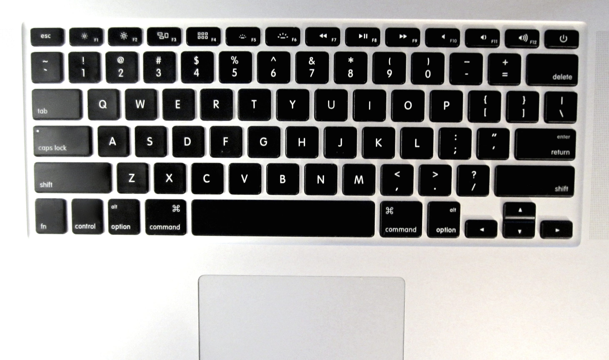
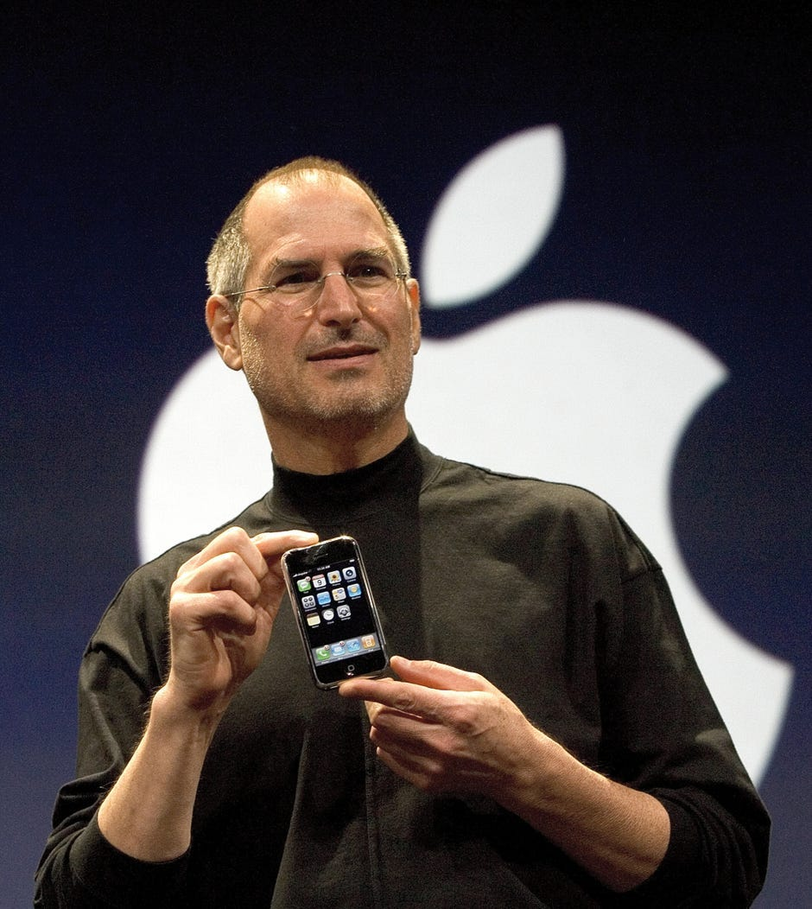
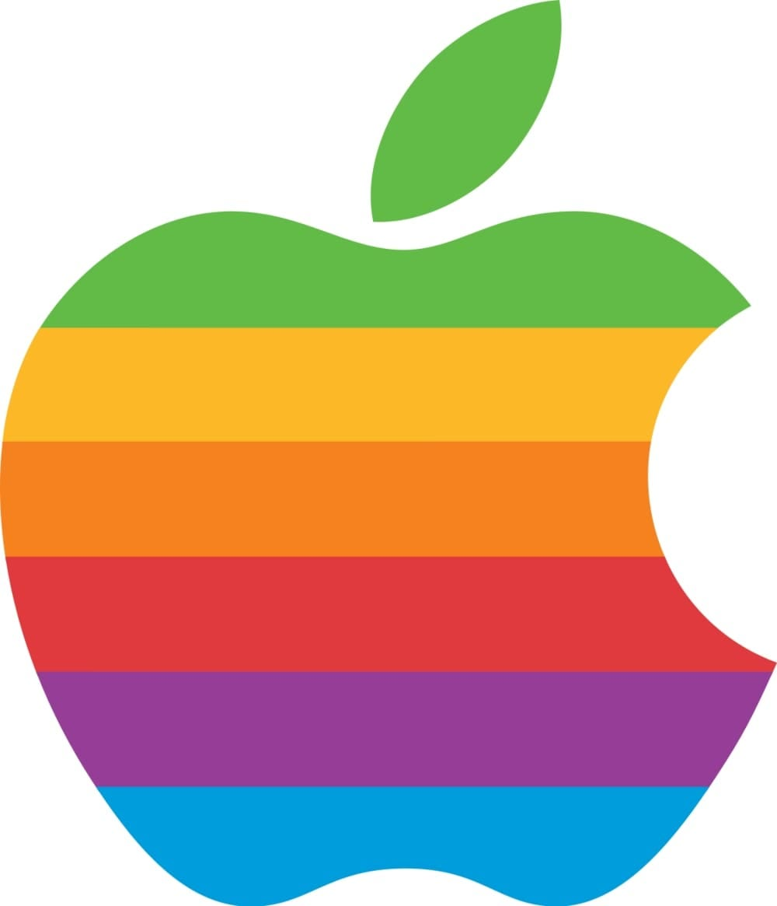
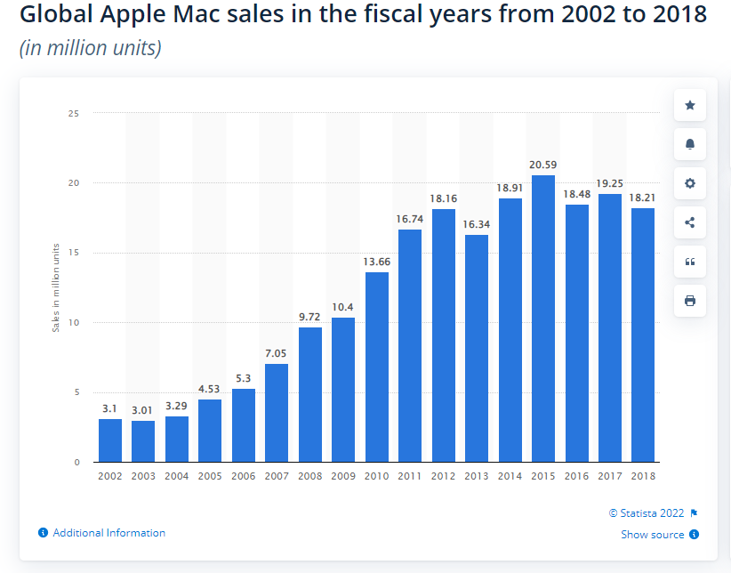

Apr 9
Apple is Entering the SaaS market

Apple, the mythic silicon valley startup that led the personal computer revolution with its range of proprietary computers back in the 80s before leading now the phone market with a category-defining (smartphone) device introducing many innovations like multi-touch and the removal of the mechanical keyboard that used to equip PDAs and phones, is about to make a big and smart entry into the SaaS market segment that it has ignored since now leaving this stake to its peer Microsoft and other startups like slack, zoom, and other like.

In 2007 during the D5 Conference, Steve Jobs was interviewed by kara swisher and Walt Mossberg and he was qualifying Bill gates as the first who saw the opportunity of software as a whole market in itself. To say that at that time, and even now, Apple has never taken itself as a software company but first as a hardware company that I now qualify as a digital UX design company. As described during this past event by steve Jobs, Apple is a company focused on building best class devices (computers he said) with the best user experience for its small group of engaged fans who love great tech products and gadgets and are ready to pay premium prices to get them. Trying to lead the software market has never been the goal of the company with the multicolored crunched apple logo.

The only part of Apple that is about software is that the company had always constrained itself to design and develop the operating systems that would equip the devices that it markets and the core applications like iTunes and apps store that have built-in business models. But Apple has always opened its devices and OS to other companies like Microsoft, Adobe, Novell, and other first early software companies for them to offer best class software to Apple's devoted list of customers. This old strategy of Apple letting others offer software to its users was also expressed by its late Ceo during this same D5 conference and since then it has always partnered with other companies and startups that offer amazing software. According to Steve Jobs, this was the only way for Apple to concentrate its effort on what it can do better which is to design best-class devices (personal computers and smartphones). This is the same idea of outsourcing software supply that led Apple to implement the app store, the first applications marketplace, that allowed the company to leverage the wisdom and skills of the community of developers and startups for populating the iPhone with apps that made its user experience better while providing a new stream of revenues for the participant by creating new a tech market segment of mobile applications. This with a very strong commitment to guaranteeing mobile users' privacy. A commitment that raised some voices saying that Apple was abusing its position of monopole and was refusing many applications submitted by developers. But to these accusations, Steve Jobs responded by saying the only reason for an app to be refused access to Apple’s app store is about users’ privacy and provided metrics of the app store in terms of submission and acceptance of applications. the metrics that had been given by steve Jobs show that we are far from what was the mobile application back then, a market that is now a market of actually a market size of over 150 billion dollars.
Maybe that are those voices that made google enter the market of mobile applications with its open-source mobile operating system android.
Since the beginning, unless some software for creative people like final cut Apple has never exploited its design capability to come up with highly well-designed software and new ways of using them. Curiously apple's founder was at the frontline of making software development accessible to professionals and enterprises because he launched Next a new brand of PCs during the time he was laid off as the Ceo of the company. With some brilliant engineers, Jobs built NextSTEP an object-oriented development framework that had built-in visual development that allowed everyone developed data-based applications with a drag and drop interface called interface builder. Interface builder is what we may call today a no-code platform like Microsoft power apps.
But once at Apple again as CEO steve Jobs never headed the company toward building great software for businesses and consumers and Apple was oriented toward consumer products rather than business products because again according to its CEO it is very difficult to sell to enterprises because those who use the product to sell arent often the ones who have the buying power and the selling cycle is a very long while in the consumers market that’s the consumer who decides what to buy and if they don't love they will not buy. This assumption made apple focus on the consumer market by trying to design and market creative hardware that consumers will love and this strategy paid with the iPod and then the Ipad and the iPhone while ignoring the Business market segment that Microsoft served with professional software solutions like its range of server and database software.
Steve Jobs passed away and times have changed and the way software is sold also. The change in the way how software is sold actually gives professionals and employees more decisions power for acquiring a new software they need because software is now a commodity that could be purchased and installed in a few clicks. These market changes have made Apple reconsider its strategy regarding software and the company has seen Microsoft as an example of an incumbent software company threaded by many SaaS startups like Zoom, Slack, Notion, and others that succeeded in coming up with solutions like Team, Loop and other SaaS solutions that leveraged the distribution channel that Microsoft has built over year for outperforming these incoming threats. Wherever Microsoft entered lately a new SaaS segment it has always made its way toward a significant portion of that SaaS market because of the company’s presence and distribution channels among enterprises. Apple believes that like Microsoft it can do the same by leveraging not only its brand but the many stores it has as a direct distribution channel.
Another fact that is in favor of a change of strategy about software is that Apple has seen its laptop MacBook gaining traction among professionals and enterprise consumers like developers, engineers, and creative people who against their company's actual IT politics decide more and more to opt for Apple hardware and these professionals are all voracious consumers of SaaS.
This chart about The level of sales of Apple Mac from 2002 to 2018 shows this increasing level of adoption of Apple computers adoption

18 to 20 million users are enough for Apple to operate profitable SaaS solutions
The economical weather changing and becoming harder to navigate through is a good reason for Apple to exploit the market share that it has gained in the laptop market segment with its MacBook hardware by providing MacBook users a range of “Applely” well designed SaaS solutions like what other tech companies are actually doing. The recurring revenues benefits that this repositioning will bring are not negligible because of how this will strengthen the financials of the company in long term.
The questions to ask are: how these SaaS solutions will look given the design taste we know from Apple? What new innovative SaaS business model Apple will imagine and put on the table? What is the SaaS segment that Apple will first try to conquer? Enterprise communication tools like Team, Slack, Notion or …? Creative SaaS suite like those from Adobe?
A series of questions that one can answer by taking the time to do investigative research like what I am actually doing or by just speculating. My actual state of investigation shows me that Apple is actually trying to target the many independent developers using Macbook by offering them AI-fueled developer tools with a list of amazing developer experiences that improve developer productivity and creativeness. Given the design taste that we know from Apple we all could expect that the SaaS solutions that it will deliver will come with amazing UI like how all apple products are But a Macbook Saas Market like the apps store is likely to be included in the SaaS business model that Apple will go after.
A new Apple Vs Microsoft Battle on the Ring of SaaS is about to start. I don't know in what camp you will be but this theory that I am writing about actually shows that both companies will benefit from this front to front battle like in the early days and other startups will suffer from it. I have covered two of the elements of this theory about the SaaS duopolistic market in these two articles written in May 2021
I hope you appreciate this investigation and I wish that I will have the time and power to expose you to more elements about it.
Thank You for Reading